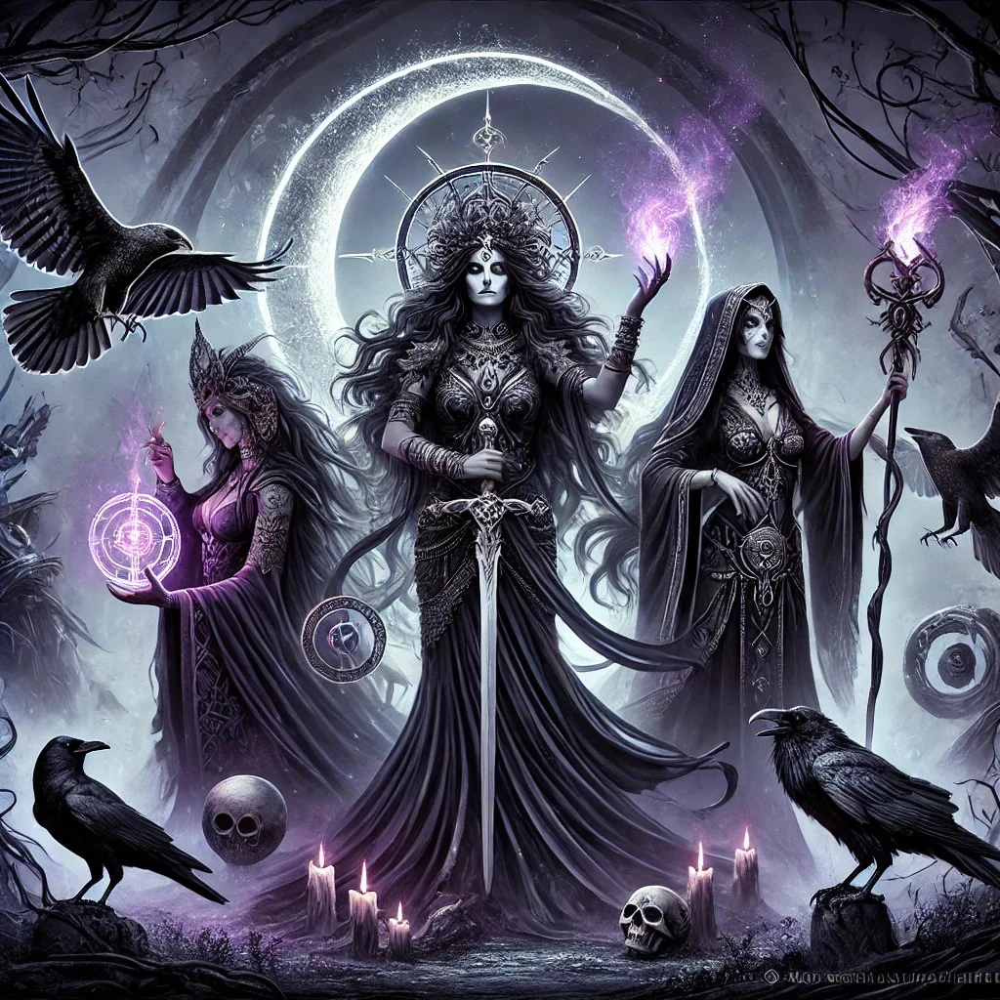

About Selene
SELENE is the Titan goddess of the moon. She was depicted as a woman riding sidesaddle on a horse or driving a chariot drawn by a pair of winged steeds. Her lunar sphere or crescent was either a crown set upon her head or the fold of a raised, shining cloak. She was sometimes said to drive a team of oxen and her lunar crescent was likened to a pair of bull's horns.
Hekate, Persephone and Selene
Selene’s characteristics
- She was represented by the old Greek poets represented as the moon incarnate.
- Her Roman name is Luna.
- Her symbols are lunar disc or crescent.
- She’s also full of light
- She’s friend of Hekate and Selene.